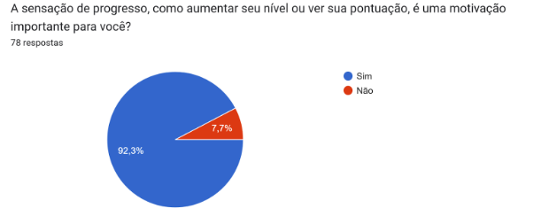
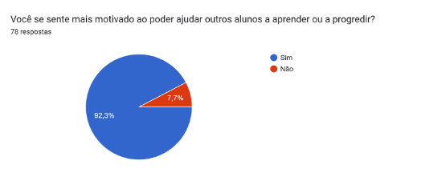
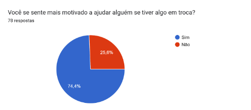
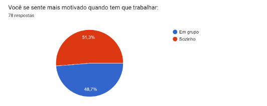
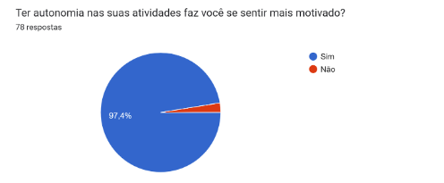
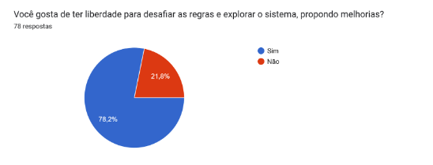

Integrantes do Grupo:
| Mat. | Nome | Responsabilidade |
|---|---|---|
| 231027032 | ARTHUR EVANGELISTA DE OLIVEIRA | Criação do formulário |
| 232001649 | DAVID WILLIAM LEMOS FERREIRA | Análise do formulário |
| 232013980 | GABRIEL ANDRADE MAGIOLI | Análise do formulário |
| 231038644 | GIOVANA DE SOUZA FONTES | Análise do formulário |
| 222008691 | GUSTAVO RIBEIRO LINHARES | Criação do formulário |
| 221022604 | JOÃO VICTOR DA SILVA BATISTA DE FARIAS | Análise do formulário |
| 231035455 | LETICIA MARIA DE JESUS LOPES | Criação do formulário |
| 231026886 | SOPHIA SOUZA DA SILVA | Análise do formulário |
| 231011865 | WILLIAN WAGNER XAVIER RAMOS DA SILVA | Criação do formulário |
| 231038303 | YAN MATHEUS SANTA BRIGIDA DE AGUIAR | Criação do formulário |
Histórico de Revisões
| Versão | Data | Descrição da Alteração | Nome(s) Integrante(s) |
|---|---|---|---|
| 1.0 | 24/11/2024 | Criação do documento | Arthur, Gustavo, Letícia, Willian, Yan |
Relatório do Formulário de Gamificação
Universidade de Brasília
Campus UnB Gama
Faculdade de Ciências e Tecnologias em Engenharia
Grupo 6 - Wunjo
Brasília, 2024
Objetivo do Documento
Este documento relata a análise das respostas obtidas no formulário de identificação de perfis de jogadores (players), desenvolvido para orientar a elaboração da gamificação de um projeto na FCTE, UnB Gama. O formulário contou com 78 respostas.
Ferramenta Hexad
O estudo baseia-se na ferramenta Hexad, que define seis tipos de perfis de jogadores:
- Free Spirit (Espírito Livre)
Motivados pela liberdade de ação e expressão. - Philanthropist (Filantropo)
Desejam ajudar os outros sem esperar retorno. - Socializer (Socializador)
Valorizam a interação social e o trabalho em equipe. - Achiever (Realizador)
Buscam progresso pessoal e excelência. - Disruptor (Revolucionário)
Desafiam o status quo, propondo mudanças. - Player (Jogador)
Focados em recompensas tangíveis e reconhecimento.
Resultados
1. Achiever (Realizador)
- 92,3% consideram o progresso e a conquista de metas como importantes.

2. Philanthropist (Filantropo)
- 92,3% sentem-se motivados ao ajudar os outros.

3. Player (Jogador)
- 74,4% valorizam recompensas por ajudar.

4. Socializer (Socializador)
- 51,3% preferem trabalhar em grupo.

5. Free Spirit (Espírito Livre)
- 97,4% sentem-se motivados pela autonomia.

6. Disruptor (Revolucionário)
- 78,2% gostam de desafiar as regras e propor melhorias.

Perfis Definidos para a Gamificação
A equipe Wunjo definiu os perfis de jogadores que fundamentarão a gamificação:
- Free Spirit (Espírito Livre)
- Destaque com 97,4% de respostas favoráveis.
-
Base principal para a gamificação, por alinhar-se à proposta de uma plataforma de tutoria livre.
-
Player (Jogador)
- 74,4% de respostas positivas.
-
Essencial para incentivar a competitividade, com recompensas e ranqueamento.
-
Philanthropist (Filantropo)
- 92,3% de respostas positivas.
- Apesar da relevância, não será prioridade.
Menção: Socializer (Socializador)
- Apesar de destaque na última questão (41%), foi descartado devido à resistência dos estudantes à interação social.
Conclusão
Os dados apontam que a gamificação deve priorizar os perfis Free Spirit e Player, enquanto os perfis Philanthropist e Socializer exigem abordagens específicas. A aplicação será estruturada para explorar a liberdade e recompensas tangíveis, alinhando-se às preferências do público-alvo.